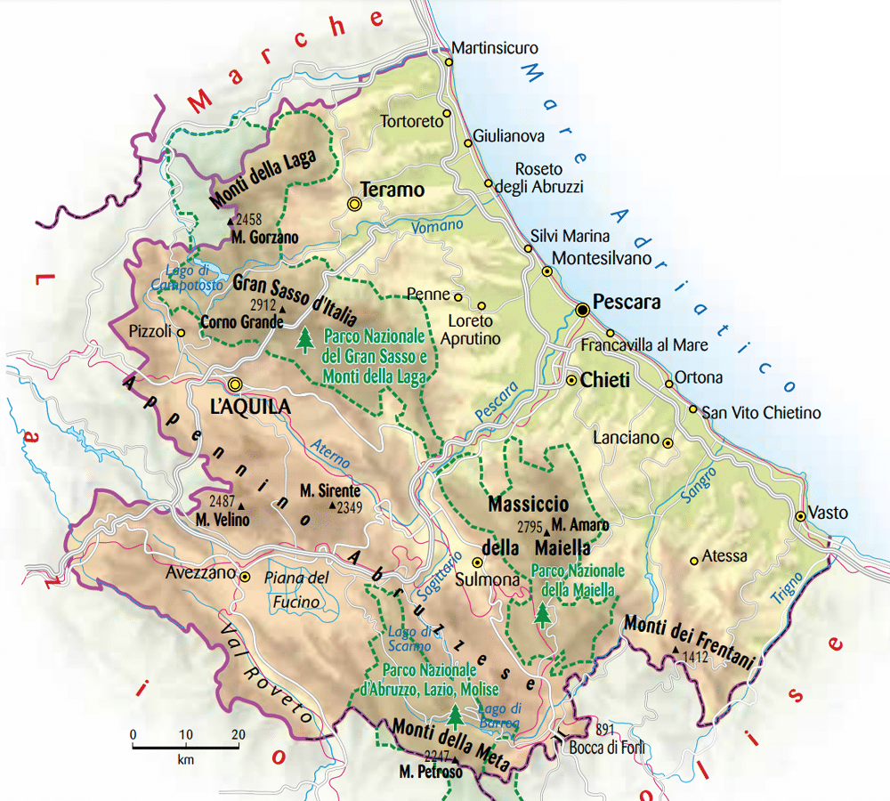
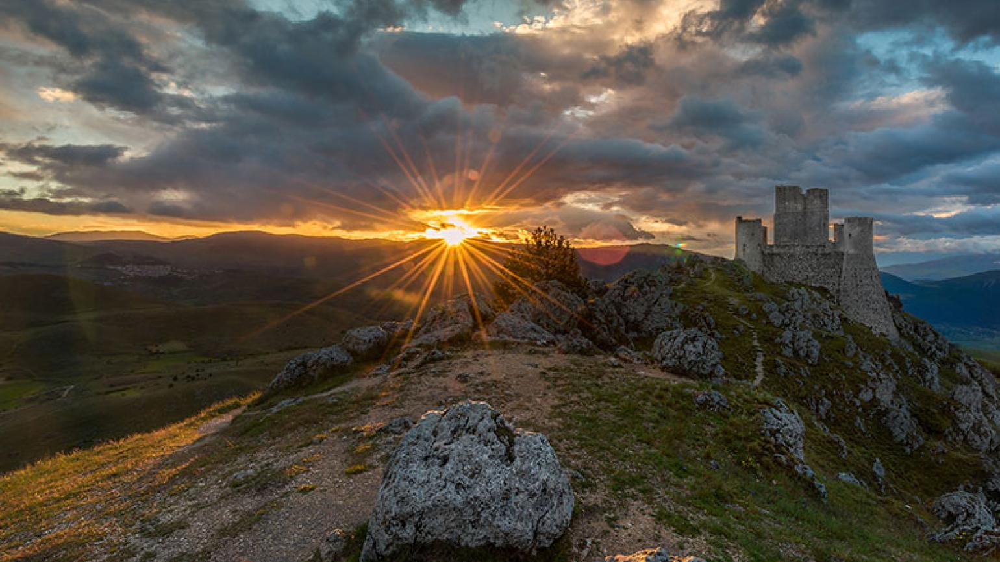

| Nome |
Abruzzo |
| Capoluogo |
L'Aquila (AQ) |
| Data di Istituzione |
16 Maggio 1970 (separato dal Molise) |
| Altitudine media |
563 m.s.l.m |
| Superficie |
10.832 km^2 |
| Abitanti (agosto 2023) |
1.266.979 |
| Densità |
117 ab/km^2 |
| Comuni |
305 |
| Province |
Chieti (CH), Pescara (PE), Teramo (TE) |
| Confini |
Marche, Lazio, Molise, Mar Adriatico |
| Patrono |
Gabriele dell'Addolorata |
| PIL procapite (2017) |
25.100€ |
Posto da visitare assolutamente: Rocca Calascio - Calascio (AQ)
Rocca Calascio è un antico castello situato in Abruzzo, Italia,
a un'altitudine di circa 1.460 metri nel Parco Nazionale del Gran Sasso
e Monti della Laga. Ecco alcuni dettagli su questa suggestiva rocca:
Storia:
La Rocca Calascio ha origini medievali ed è stata costruita nel X secolo.
Fu inizialmente utilizzata come torre di avvistamento per difendere il
territorio circostante dalle incursioni nemiche.
Nel corso dei secoli, ha subito varie trasformazioni e ampliamenti.
Architettura:
La rocca è un esempio di architettura militare medievale e si sviluppa su
più livelli. La sua struttura comprende una torre principale,
mura perimetrali e altre costruzioni.
La posizione elevata offre una vista panoramica spettacolare sulle
montagne circostanti.
Utilizzo cinematografico:
La Rocca Calascio è diventata famosa anche per essere stata utilizzata
come location cinematografica. È apparsa in diversi film, tra cui
"Ladyhawke" (1985) e "Il Nome della Rosa" (1986).
La sua atmosfera suggestiva e il paesaggio circostante la rendono
una scelta ideale per produzioni cinematografiche storiche e fantasy.
La Chiesa di Santa Maria della Pietà:
All'interno del complesso della Rocca Calascio si trova la
Chiesa di Santa Maria della Pietà. Questa chiesa, costruita nel XV secolo,
è caratterizzata da un campanile e da affreschi ben conservati all'interno.
Accesso:
La Rocca Calascio è accessibile tramite una strada panoramica
che conduce dalla località di Santo Stefano di Sessanio.
Una volta raggiunta la base della rocca, è possibile percorrere una
breve salita per arrivare al castello.
Il percorso è abbastanza impegnativo a piedi,
ma la vista panoramica dalla cima ripaga gli sforzi.
Turismo:
La Rocca Calascio è una meta turistica popolare,
attirando visitatori con il suo fascino medievale e la
spettacolare vista sulle montagne circostanti.
È anche una destinazione apprezzata dagli appassionati di fotografia,
specialmente durante le ore del tramonto e del crepuscolo.
Parco Nazionale del Gran Sasso e Monti della Laga:
La Rocca Calascio si trova all'interno del Parco Nazionale del Gran Sasso
e Monti della Laga, un'area protetta che offre paesaggi naturali diversificati
e una ricca flora e fauna.
La Rocca Calascio rappresenta un affascinante esempio di architettura
medievale e una testimonianza della storia e della cultura della regione.
La sua posizione remota e la sua atmosfera unica la rendono un luogo
imperdibile per coloro che esplorano l'Abruzzo.
